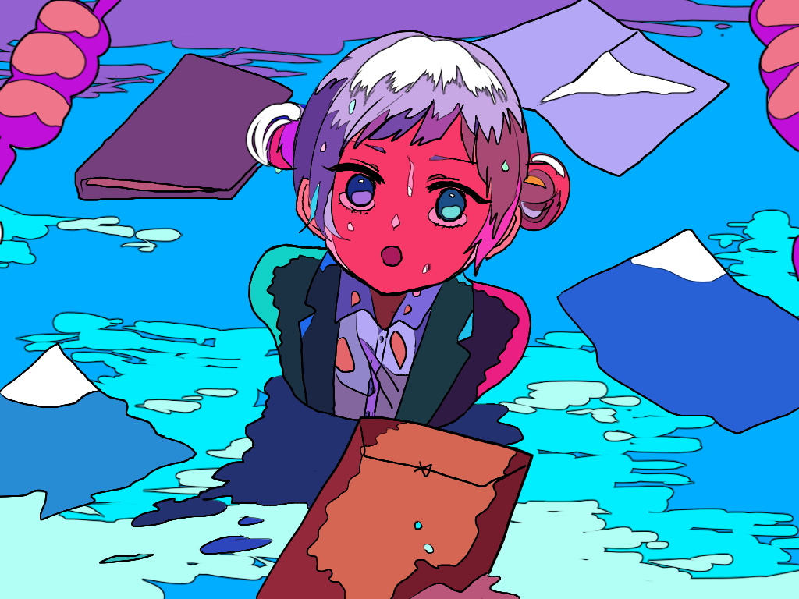
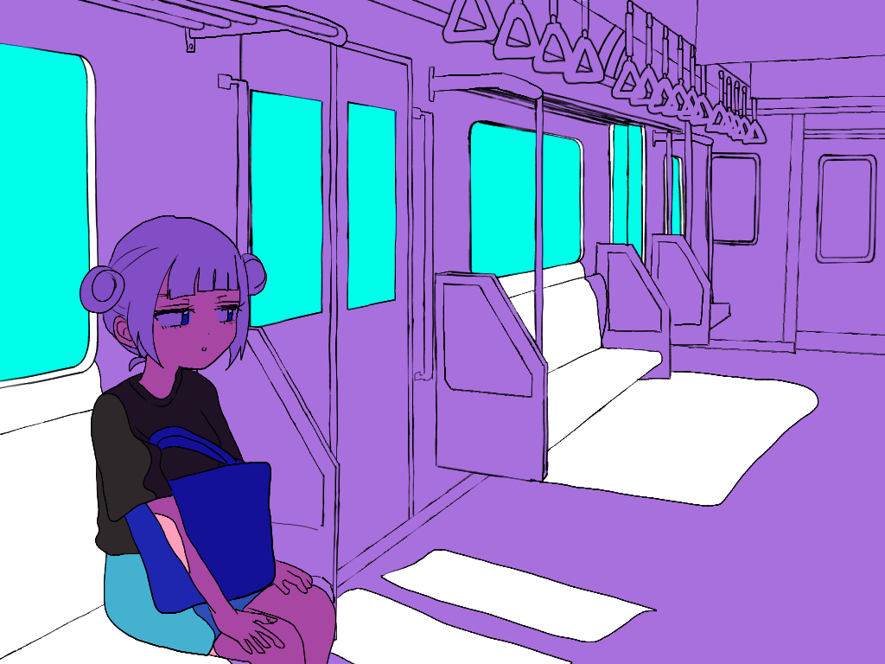

1
歩く幽霊
部屋でベッドの上でごろごろしていた。授業でインターネットを切るよう指示されていたことを思い出したので実施した。オフラインになるとやることが見つからなかったのでiPodで音楽を聴いていた。なんとなくBUMP OF CHICKENの「歩く幽霊」を聞いた。普段はSNSを見ながら、作業をしながら音楽を聴いているので音楽だけを聴くのは新鮮な感じがした。いつもよりドラムの音がはっきりと聞こえるような気がした。ところでボーカルの藤原基央のハーモニカが格好良い。

Tuesday,June 12,2018 19:00-23:00
2
小さな窓
キャリア支援センターで履歴書を添削してもらったので構想を練り直していた。自分を見つめ直すのは疲れる。SNSをあまりチェックしないようになってからどうも周囲に音がないように感じる。ネット上は人混みに似ていると常々思う。さして見たいわけでもない広告が目に飛び込んでくるのは街中で流れる広告に似ているし、別段見たいわけでもない他人のやりとりが目に入るのも現実に似通ったところがあると思う。関係ないが伸びているツイートのリプライ欄を見てしまう癖が抜けない。Twitterでは文章とbioから画面の向こう側の顔を伺うことができる気がしている。

Wednesday,June 13,2018 19:00-23:00
3
夏の就活生
企業に提出する書類の準備をしていた。途中、封筒の書き方を調べるためにネットに接続した。先述した通りネット上は人混みに似ているが、反対にネットを遮断した世界は音がなく、水の中のようだと思う。海や川ではなく人工的な、波の立たないプールに似ていると思う。その中では外部の音がぼんやりと聞こえる程度で、ただ自分が身一つで漂っているだけである。水の中から上がれば、どこからか聞こえる人の会話に思考を巡らせるかもしれないし、私に話しかけてくる人にも気が付くことができるかもしれない。

Thursday,June 14,2018 19:00-23:00
4
青い昼
早く帰ることができたので、帰りの電車の中で実施した。することが見つからなかったので電車の中吊り広告や外の景色を眺めていたが、他の乗客と何度も目があって気まずかったので眠った。今この時間帯の電車に乗車している人は何をしている人なんだろうなどと思った。子連れの母親の他にも、よくわからない年齢のおじさんやお兄さんも利用していた。普段はこんなに人の年齢や格好を気にすることはない。下を向いていると見えないことがあるなと思った。

Friday,June 15,2018 13:00-15:00
5
火星のねこ
朝から忙しかったのであまり触らなかった。夜寝る前にメールなどを確認した。なんとなく火星に行く漫画を描いた。昔からバラエティ番組で流れるUMAやUFO、宇宙人の目撃映像が好きなので最近見なくなって悲しい。明らかに嘘っぽいものもあって、逆にポップだと思う。何歳になってもフィクションを信じていたい。
Satursday,June 16,2018
6
踊る電車
一日中出掛けていたので実施しなかった。入ったカラオケボックスで隣の部屋の人がBUMP OF CHICKENとMr.Childrenしか歌わない。最後だけ米津玄師のLemonを歌っていた。センスが良い。帰ってきて風呂に入るとすぐに眠った。寝る前、ぼんやりとオフラインの状態は人の少ない時間帯の電車に似ていると思った。誰も降りないし乗ってもこないのに、ひとりでに開いたり閉まったりしているドアが健気でかわいい。
Sunday,June 17,2018
7
平成の本棚
新しい本を買ったので眠くなるまで本を読んでいた。面白い本があったので感想を呟きたかったがオフラインにしていたため断念した。今すぐ誰かに話をしたいのに……と、むず痒い気持ちになったが次の本を読んでいたら忘れた。ちょうど一年前、田山花袋の少女病を読んだら面白かったので、東京の三十年を学校の図書館で借りたものの読んでいると眠くなって半分ほど読んだところで返却期限が来たのを思い出した。そして去年の末に買った高村光太郎の詩集をまだ読んでいない。学生のうちに、アニメでも漫画でも映画でも、面白いと言われるものは一通り知っておきたい。最近は今敏のパプリカという映画が気になる。

Monday,June 18,2018 19:00-23:00
8
くるくる寿司
帰ってきてからずっと絵を描いていた。久しぶりだったので楽しくなって6枚も描いた。SNSにアップするためにインターネットに接続した。すぐにレスポンスが返ってくるのは楽しかった。夕方家族で回転寿司へ行った。中とろが98円だったので食べたら水っぽかった。寿司屋に行くと貝とエビとイカばかり食べる。最近はふとした瞬間にオフラインの状態は何にしているだろうかと考える。今日は少ない色数で描かれた絵に似ているなと思った。
Tuesday,June 19,2018 19:00-23:00
9
流れるお家
家に帰ってきたらスマートフォンの充電が切れていたが面倒だったのでそのままにしておいた。そのため実施時間がずれこんでいる。夜になってなんとなく、相対性理論の「小学館」という楽曲がオフラインの状態の雰囲気に似ていると思った。地球がなくなった宇宙で一人、遭難しているという歌である。MONSTERの最終巻が読みたいという歌詞がやけに切ない。
Wednesday,June 20,2018 15:00-20:00
10
黄金サラリーマン
4限が始まった時点でスマートフォンとiPodとスマートフォンの充電器の充電が切れたうえ電車が混んでいて40分立っていたのでたくさん考え事をした。17時に下り方面の電車に乗っている社会人はいったいなんの仕事をしているんだろうか。私の前に座っているサラリーマンが起きているのに足を伸ばしていてで邪魔だった。夕飯を食べ終えSNSを覗くとジョジョの奇妙な冒険の第5部のアニメ化が決定したとのことだったのでもうそのこと以外何も考えられなくなったのでやめた。今から待ち遠しい。
Thurusday,June 21,2018 16:00-21:00